Features, hierarchy and the whole model
Source:vignettes/features-hierarchy.Rmd
features-hierarchy.RmdMeasuring each feature
Every measure of every feature
Function: vp_feature_table()
The question. Which features does everything else depend on? Which ones depend on many others? Which ones decide the most?
vp_feature_table() gives one row per feature that can
vary, with one column per measure. Each measure is given in words, with
an example, and as a formula, in the notation of this box:
Notation of the formulas. is the set of features that can vary (the nodes of the graphs) and their number; is the number of elements of a set . For two features and of :
: requires (an arrow of the requires graph);
: excludes (a line of the excludes graph);
: every product has or (a line of the at-least-one graph);
: an arrow of the skeleton , the requires graph without the arrows that follow from others (The skeleton), and the number of arrows of the shortest chain of from to ( when there is none).
The table has fifteen columns, so here they are a few at a time,
picked with select(). Each group comes with a table that
gives its formula and a one-line meaning, followed by a detailed
explanation of every column on the drawings of the band.
Four counts
ft <- vp_feature_table(band)
ft |> select(feature, required_by, requires, excludes, atleastone)
#> # A tibble: 11 x 5
#> feature required_by requires excludes atleastone
#> <chr> <int> <int> <int> <int>
#> 1 Screen 6 2 1 1
#> 2 TouchScreen 0 3 1 0
#> 3 OLED 6 2 1 1
#> 4 CapacityButton 6 2 1 1
#> 5 ContactlessPayment 0 1 0 0
#> 6 MovementFilter 0 4 3 0
#> 7 HeartRateSensor 1 0 1 0
#> 8 BLEv40 1 3 2 0
#> 9 BLEv42 0 4 3 0
#> 10 BT40 0 0 7 3
#> 11 NFC 1 0 0 0| Column | Formula | Meaning |
|---|---|---|
required_by |
How many features require this one (its sensitivity). | |
requires |
How many features it requires. | |
excludes |
How many features it excludes (its conflict degree). | |
atleastone |
How many features it is joined to in the at-least-one graph. |
The figure is the requires graph of the band, and the figure its excludes graph; the links of MovementFilter are thick. Every count of this group can be read on them.
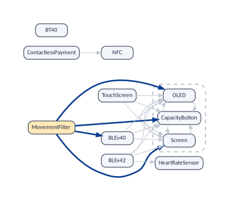
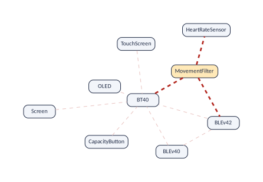
required_by: how many features depend on this
one. Count the arrows that arrive at the feature in
the figure. Six arrive at Screen: from TouchScreen,
MovementFilter, BLEv40, BLEv42, and from
OLED and CapacityButton, the other two members of its
atomic set. Those six features form the impact set of
the screen: if the screen is removed, renamed or given a new
requirement, all six are affected Abate et
al. (2009). The measure is also called the
sensitivity of a feature. Because the requires graph is
complete, the count includes the features that depend on it through a
chain: MovementFilter reaches the screen only through
BLEv40, and it is counted. Use it to find the features
that deserve the most careful review and the most testing: a mistake in
them spreads to many others.
requires: how many features this one depends
on. Count the arrows that leave the feature. Four
leave MovementFilter: BLEv40, Screen,
OLED and CapacityButton. So selecting the movement
filter brings four features along, and four features can break it: if
any of them changes, the movement filter may stop working. Use
it to find fragile features, and the features that a user cannot
select without accepting many others.
excludes: how many features this one rules
out. Count the lines of the feature in the figure: three for
MovementFilter, seven for BT40. It is the
conflict degree of the feature: what selecting it costs
in lost choices. A feature that excludes almost everything is available
only in a small corner of the products, which is worth checking against
the intention of whoever wrote it.
atleastone: how many features leaving this one
out forces in. Count the lines of the feature in the
at-least-one graph (the figure): BT40 has three, to the three
features of the atomic set of the screen, because every band has a
screen or classic Bluetooth. It is NA when the run had no
or_graph = TRUE. Why it matters: these are the
features a user cannot simply refuse. In a configurator, leaving out one
of them forces another in, so a high count marks a feature whose “no”
has consequences that users do not expect; for testing, each line
removes one combination (“neither”) that no product can have.
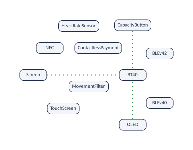
What a decision settles
ft |> select(feature, decision_power, decision_power_off, isolated)
#> # A tibble: 11 x 4
#> feature decision_power decision_power_off isolated
#> <chr> <dbl> <dbl> <lgl>
#> 1 Screen 0.3 0.7 FALSE
#> 2 TouchScreen 0.4 0 FALSE
#> 3 OLED 0.3 0.7 FALSE
#> 4 CapacityButton 0.3 0.7 FALSE
#> 5 ContactlessPayment 0.1 0 FALSE
#> 6 MovementFilter 0.7 0 FALSE
#> 7 HeartRateSensor 0.1 0.1 FALSE
#> 8 BLEv40 0.5 0.1 FALSE
#> 9 BLEv42 0.7 0 FALSE
#> 10 BT40 0.7 0.3 FALSE
#> 11 NFC 0 0.1 FALSE| Column | Formula | Meaning |
|---|---|---|
decision_power |
The share of the other features that selecting it decides. | |
decision_power_off |
The share of the other features that leaving it out decides. | |
isolated |
TRUE for a feature in no graph. |
decision_power: what selecting the feature
settles. Selecting the movement filter settles 4 features by
the arrows of the figure (they are selected too) and 3 by the lines of
the figure (they cannot be selected). Of the other 10 features of the
band, 7 are decided: the decision power is
.
Selecting NFC settles nothing: it has no arrow leaving it and
no line, so its decision power is 0. The measure says how much a
yes settles; averaged over all features
(mean_decision_power, The whole model
in numbers) it says how fast a configuration session collapses. It
is not, by itself, the best order in which to ask the questions, because
the answer can be no (see the box “Decision power is not the
order in which to ask” below). Mann and Rock define the same ratio on
the written model Mann and Rock
(2011).
decision_power_off: what leaving the feature out
settles. Leaving a feature out works the other way round. Every
feature whose arrow arrives at it must be left out too (it
could not have it), and every feature joined to it by an at-least-one
line must be selected. Leaving out Screen rules out the 6
features whose arrows arrive at it in the figure and forces
BT40 in, by the line of the figure:
.
Leaving out NFC rules out ContactlessPayment, which
requires it:
.
It is NA without or_graph = TRUE. Why it
matters: in a configuration session “no” is as frequent as “yes”,
often more. A feature whose refusal settles much (the screen, here) is a
feature whose removal from a product, or from the product line, reaches
many others: a high value marks the features that cannot be dropped
lightly.
isolated: is the feature in no graph?
TRUE when the feature has no arrow and no line at all. No
feature of the band is isolated; BusyBox has 38. As far as relationships
between two features go, such a feature is free. Some are truly
independent; others are constrained only by rules over three or more
features, which the graphs do not show; a few may be left-overs that
nothing uses any more. Why it matters: isolated features are
the cheapest to test (they can be combined freely), the first suspects
in a clean-up of dead options, and, when many, a hint that the model
holds constraints the graphs cannot see.
Measures on the skeleton
The last columns look at the skeleton only (the figure): the arrows that do not follow from others, close to what was written. On the skeleton, each arrow is one step, so it makes sense to talk about how far apart two features are, which in the complete graph, where every requirement is a direct arrow, would always be one step.
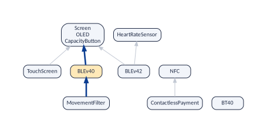
ft |> select(feature, level, direct_required_by, direct_requires)
#> # A tibble: 11 x 4
#> feature level direct_required_by direct_requires
#> <chr> <int> <int> <int>
#> 1 Screen 0 3 0
#> 2 TouchScreen 1 0 1
#> 3 OLED 0 3 0
#> 4 CapacityButton 0 3 0
#> 5 ContactlessPayment 1 0 1
#> 6 MovementFilter 2 0 1
#> 7 HeartRateSensor 0 1 0
#> 8 BLEv40 1 1 1
#> 9 BLEv42 1 0 2
#> 10 BT40 0 0 0
#> 11 NFC 0 1 0
ft |> select(feature, betweenness, closeness_out, closeness_in, harmonic)
#> # A tibble: 11 x 5
#> feature betweenness closeness_out closeness_in harmonic
#> <chr> <dbl> <dbl> <dbl> <dbl>
#> 1 Screen 0 NA 0.8 0
#> 2 TouchScreen 0 1 NA 1
#> 3 OLED 0 NA 0.8 0
#> 4 CapacityButton 0 NA 0.8 0
#> 5 ContactlessPayment 0 1 NA 1
#> 6 MovementFilter 0 0.667 NA 1.5
#> 7 HeartRateSensor 0 NA 1 0
#> 8 BLEv40 1 1 1 1
#> 9 BLEv42 0 1 NA 2
#> 10 BT40 0 NA NA 0
#> 11 NFC 0 NA 1 0
ft |> filter(!is.na(atomic_set)) |> select(feature, atomic_set)
#> # A tibble: 3 x 2
#> feature atomic_set
#> <chr> <chr>
#> 1 Screen Screen
#> 2 OLED Screen
#> 3 CapacityButton Screen| Column | Formula | Meaning |
|---|---|---|
level |
if has no arrow in ; else | Its layer in the hierarchy. |
direct_required_by |
The features that require it directly. | |
direct_requires |
The features it requires directly. | |
betweenness |
, where counts the shortest chains of from to and those that pass through | How many chains of requirements pass through it. |
closeness_out |
, over the features that reaches | One over the average number of steps to what it requires. |
closeness_in |
, over the features that reach | One over the average number of steps from what requires it. |
harmonic |
, with | The sum of one over the steps to each requirement. |
atomic_set |
The first feature of its atomic set, if it is in one. |
In all of them an atomic set counts as one node, as in the figure, and its members share its values.
level: the layer of the feature. A
feature that needs nothing is at level 0 (the screen, the heart-rate
sensor, BT40, NFC); a feature whose direct
requirements are all at level 0 is at level 1 (TouchScreen,
ContactlessPayment, BLEv40, BLEv42);
MovementFilter, which needs BLEv40, is at level 2. The
level is the length of the longest chain of requirements that starts at
the feature, so it is the number of steps of the longest explanation of
why selecting it forces something. Why it matters: features of
level 0 are the foundations, to be built and stabilised first; a high
level marks a feature that rests on a tall stack of others, so it is
more likely to be broken by changes below it and harder to explain to
users. A configurator asks about features in the order of their levels
(A safe order for the
questions). Levels, depth and the longest
chain draws the levels and uses them.
direct_required_by and
direct_requires: the arrows of the skeleton. Count
the arrows that arrive at, or leave, the feature in the figure. Three
arrive at the screen, from TouchScreen, BLEv40 and
BLEv42, against six in the complete graph: the other three are
MovementFilter, which reaches the screen only through
BLEv40, and OLED and CapacityButton, which
are the screen itself as far as choices go. BLEv42 has two
direct requirements, the screen and the heart-rate sensor. The
difference between a count and its direct version is what the chains
add: a feature with many dependants but few direct ones is a hub by
inheritance, which vp_genuine_hubs() (below) examines.
betweenness: is the feature a gateway?
Some features are not the beginning of a requirement, nor its end, but a
step in the middle: a feature
requires a feature
only through them. Betweenness counts how often a feature is
such a step. It is measured on the skeleton, where each arrow is one
step, in three steps:
Take every pair of features and such that requires through a chain of two arrows or more of the skeleton. (A direct arrow has nothing in between, so it gives no point to anybody.)
Find the shortest chain from to .
Give one point to every feature in the middle of that chain. If several chains are equally short, share the point among them: with two such chains, each feature in the middle of one of them gets half a point.
The betweenness of a feature is the sum of its points: in the formula of the table, is the number of shortest chains from to , and the number of those that pass through .
On the band. The pairs of step 1 are the arrows of the
requires graph that are not in the skeleton, between different nodes:
those that need a chain. vp_implied_requires() (The skeleton) lists them, and
vp_explain_requires() gives the chain:
vp_implied_requires(band)
#> # A tibble: 1 x 3
#> from to via
#> <chr> <chr> <chr>
#> 1 MovementFilter Screen BLEv40
vp_explain_requires(band, "MovementFilter", "Screen") |> filter(route == 1)
#> # A tibble: 2 x 5
#> route step from link to
#> <int> <int> <chr> <chr> <chr>
#> 1 1 1 MovementFilter requires BLEv40
#> 2 1 2 BLEv40 requires ScreenThere is a single pair, and a single chain: MovementFilter → BLEv40 → the screen (the thick arrows of the figure). BLEv40 is in its middle, so it gets the only point: its betweenness is 1, and every other feature has 0. The screen is the most required feature of the band, yet its betweenness is 0: it ends chains, it does not relay them. A feature with a high betweenness is a gateway: the point through which indirect requirements pass, and where implicit dependencies come from.
On a bigger band. The Mi Band 8, the last generation of the history of Reading the results, has longer chains:
vp_feature_table(history$model[[7]]) |>
filter(betweenness > 0, is.na(atomic_set) | atomic_set == feature) |>
select(feature, betweenness, required_by) |>
arrange(desc(betweenness))
#> # A tibble: 7 x 3
#> feature betweenness required_by
#> <chr> <dbl> <int>
#> 1 TouchScreen 16 14
#> 2 AMOLED 15 11
#> 3 Photoplethysmogram 9 4
#> 4 SpO2 5 1
#> 5 OLED 3 4
#> 6 ContactlessPayment 3 3
#> 7 BLEv40 2 1Being required and being a gateway are different things. Compare two features of the table above:
vp_feature_table(history$model[[7]]) |>
filter(feature %in% c("AMOLED", "HeartRateSensor")) |>
select(feature, required_by, betweenness)
#> # A tibble: 2 x 3
#> feature required_by betweenness
#> <chr> <int> <dbl>
#> 1 AMOLED 11 15
#> 2 HeartRateSensor 16 0The heart-rate sensor is required by more features than the AMOLED screen (16 against 11), and yet its betweenness is 0 while the AMOLED screen’s is 15. The figure shows why.
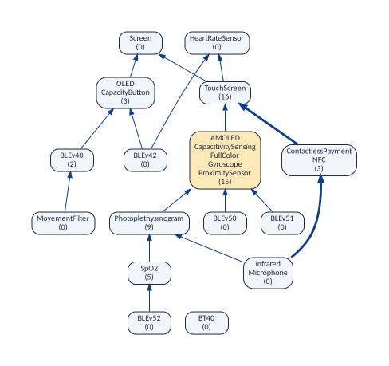
The heart-rate sensor is at the top. It needs nothing, so every chain that reaches it ends there. It is never in the middle of a chain, and gets no point.
The AMOLED screen is in the middle (an atomic set of five features, one node of the figure). Six features reach it by chains of arrows: Photoplethysmogram, SpO2, Infrared, BLEv50, BLEv51 and BLEv52. Beyond it lie three: the touch screen, the screen and the heart-rate sensor. That makes pairs whose chains could pass through the AMOLED screen. For three of them, those that start at Infrared, the shortest chain does not: Infrared reaches the touch screen in two steps through ContactlessPayment (thick arrows), and in three through the AMOLED screen. Only the shortest chain counts, so the AMOLED screen gets points. (The touch screen, just above it, gets 16: almost every chain of the band goes through it on its way to the screen or to the heart-rate sensor.)
In short: required_by says how many features
depend on a feature; betweenness says how many dependencies
travel through it.
Why it matters. Changing the heart-rate sensor affects its
16 dependants. Changing the requirements of the AMOLED screen (say, it
no longer needs the touch screen) breaks 15 indirect requirements at
once, of features that never mention the touch screen themselves: it
rewires everything below it. So a gateway is riskier to edit than its
required_by suggests. Menus and switches of whole
subsystems typically show up as gateways. Betweenness is computed on the
skeleton because in the complete requires graph every requirement is a
direct arrow, every chain has one step, and every betweenness would be
0.
closeness_out: how far away the requirements
are. Some features list everything they need in their own
declaration; others need features that are only reached through a chain.
closeness_out tells them apart, in four steps:
In the skeleton, follow the arrows from the feature and list every node that can be reached: these are its requirements (an atomic set is one node, so it is counted once). Call their number .
For each node reached, count the arrows of the shortest way to it: its distance, .
Average the distances: add them up and divide by .
Closeness is 1 divided by that average distance.
Why divide 1 by the average? So that the number grows when the requirements are closer. An average distance of 1 (every requirement is a direct arrow) gives closeness , the highest possible value; an average of 2 gives ; an average of 4 gives . The farther the requirements, the smaller the closeness. (Since the average is the sum of the distances divided by , dividing 1 by it is the same as dividing by the sum of the distances, which is how the formula in the table above is written: .)
For MovementFilter, in the figure:
| Step | Value | |
|---|---|---|
| 1. Nodes reached | BLEv40; the screen (with OLED and CapacityButton, its atomic set) | |
| 2. Distances | BLEv40: 1 arrow; the screen: 2 arrows, through BLEv40 | 1 and 2 |
| 3. Average distance | (sum of the distances) / | |
| 4. closeness_out | (average distance) |
The same last step, written as in the formula: .
BLEv42 reaches its two requirements, the screen and the
heart-rate sensor, in one step each:
,
sum 2, closeness
.
So does TouchScreen, with one requirement at one step:
.
A low value marks a feature whose requirements are mostly indirect:
reading its own declaration tells little about what it drags in, so it
is a likely source of surprises for users. It is NA for a
feature that requires nothing
(),
and it does not say how many requirements there are: one requirement at
one step, and ten at one step each, both give 1 (harmonic,
below, does).
closeness_in: how far away the dependants
are. The same, in the other direction: the features that reach
this one. The screen is reached by TouchScreen, BLEv40
and BLEv42 in one step and by MovementFilter in two:
.
A low value marks a hub whose dependants are far away: the case in which
those who change the hub are least likely to know who depends on it.
harmonic: how much a feature drags in, the near
counting more. closeness_out answers “how far
away, on average, are the requirements?”; it does not care how many
there are. The harmonic centrality answers a different question: paste0(
“how much does selecting the feature drag in, if a direct requirement”,
“counts fully and a far one counts less?” ). Its first two steps are
those of closeness_out:
In the skeleton, list every node that the feature reaches (its requirements; an atomic set counts once).
For each, count the arrows of the shortest way to it: its distance.
Turn each distance into a weight, 1 divided by the distance: a direct requirement weighs , one at two steps , one at three steps , and so on. A node that is not reached weighs 0.
Add the weights.
For MovementFilter: BLEv40 at one step weighs 1, the screen at two steps weighs 0.5; harmonic . Three features of the band show how the two measures differ:
| Feature | Requirements | Distances | closeness_out | harmonic |
|---|---|---|---|---|
| TouchScreen | the screen | 1 | ||
| BLEv42 | the screen, the heart-rate sensor | 1 and 1 | ||
| MovementFilter | BLEv40, the screen | 1 and 2 | ||
| Screen | nothing | NA |
0 |
closeness_out cannot tell TouchScreen from
BLEv42: both have their requirements one step away.
harmonic can: BLEv42 drags in twice as much. And
it ranks MovementFilter in between: it drags in two
requirements, but one of them from far.
Which one to use.
closeness_out |
harmonic |
|
|---|---|---|
| Question | How indirect are the requirements? | How much does the feature drag in, the near counting more? |
| Use it to | find features whose requirements are hidden behind chains, whatever their number: those whose own declaration tells least about what they bring, the likely sources of surprises. | rank features by how much they pull in; compare features that have different numbers of requirements; average or sum over many features. |
| Advantages | A pure measure of distance, easy to read: 1 means “everything is direct”, 0.5 “two steps on average”. | Defined for every feature (0 when it requires nothing), so no row is lost in a ranking or an average. Grows with every requirement, and still gives weight to the far ones. The usual choice of network science for graphs in several pieces, like these. |
| Disadvantages |
NA for features that require nothing.
Blind to how many requirements there are. With one or two requirements
it jumps between few values. |
Mixes number and distance, so one value can mean different things: two requirements at one step and four at two steps both give 2. Grows with the size of the model, so compare features of the same model (divide by to compare models). |
atomic_set: is the feature one of a
group? The first feature of its atomic set (Atomic sets), or NA. The three
features of the band’s set are always selected together, so for every
measure of the skeleton they are one feature. Why it matters:
members of an atomic set are one decision, so a configurator should ask
about them once and a test plan should vary them together.
Using it. The table is a tibble, so the usual verbs work. The features that decide most, first:
ft |>
arrange(desc(decision_power)) |>
select(feature, decision_power, requires, excludes) |>
head(4)
#> # A tibble: 4 x 4
#> feature decision_power requires excludes
#> <chr> <dbl> <int> <int>
#> 1 MovementFilter 0.7 4 3
#> 2 BLEv42 0.7 4 3
#> 3 BT40 0.7 0 7
#> 4 BLEv40 0.5 3 2Decision power is not the order in which to ask. It
is tempting to conclude that a configurator should ask first about the
features with the highest decision power. But a question has two
answers. The movement filter is in only a quarter of the bands: asked
about it, users answer no three times out of four, and a
no settles nothing (its decision_power_off is
0).
Heradio et al. compared orders of configuration questions on real models (a Renault car and an e-commerce platform) and found that the fewest questions are needed when the next question is the one whose answer is the most uncertain: the one with the highest entropy, , where is the share of the valid products that have the feature Heradio et al. (2014). Asking first about the features involved in the most constraints, the closest to decision power, needed more questions. A feature with is the best question: whatever the answer, it halves the products left.
Entropy needs , and comes from counting the products (with a BDD or a #SAT solver), which the graphs cannot do. For the band, whose 24 products were enumerated for the vignettes, it can be computed:
# the 24 valid bands, one per row
products <- read.csv("data/miband3_products.csv")
ft |>
mutate(
p = colMeans(products[feature]),
entropy = -p * log2(p) - (1 - p) * log2(1 - p)
) |>
select(feature, decision_power, decision_power_off, p, entropy) |>
arrange(desc(entropy))
#> # A tibble: 11 x 5
#> feature decision_power decision_power_off p entropy
#> <chr> <dbl> <dbl> <dbl> <dbl>
#> 1 BLEv40 0.5 0.1 0.5 1
#> 2 TouchScreen 0.4 0 0.375 0.954
#> 3 HeartRateSensor 0.1 0.1 0.625 0.954
#> 4 ContactlessPayment 0.1 0 0.333 0.918
#> 5 NFC 0 0.1 0.667 0.918
#> 6 Screen 0.3 0.7 0.75 0.811
#> 7 OLED 0.3 0.7 0.75 0.811
#> 8 CapacityButton 0.3 0.7 0.75 0.811
#> 9 MovementFilter 0.7 0 0.25 0.811
#> 10 BLEv42 0.7 0 0.25 0.811
#> 11 BT40 0.7 0.3 0.25 0.811BLEv40, in half of the bands, is the best first question (entropy 1). The three features with the highest decision power, MovementFilter, BLEv42 and BT40, come last: each is in a quarter of the bands. Decision power describes the model; to order the questions of a configurator, use the entropy, recomputed after each answer as the article explains.
On a bigger model the table is where most studies start. For the last month of the BusyBox history, a chart of how many features require each feature against how many it requires shows at a glance the hubs (far right), the demanding features (high up), and the few that are both:
bb <- busybox$model[[nrow(busybox)]]
p <- vp_feature_table(bb) |>
ggplot(aes(required_by, requires)) +
geom_jitter(width = 0.15, height = 0.15, alpha = 0.4, colour = "#0B3D91") +
labs(x = "required by (features)", y = "requires (features)")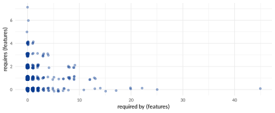
Limits: what this cannot tell you
Every count is a count of relationships between two features. A feature that is constrained only by a rule over three or more features (“A needs B or C”) gets nothing from that rule: BLEv42 requires HeartRateSensor in the graphs only because a rule over three features happens to imply it.
decision_poweris what selecting one feature decides by itself. Two selections together can decide more than the sum of what each decides, through a rule over three features (Configuring).level,direct_required_by,direct_requires,betweenness,closeness_out,closeness_inandharmonicare computed on the skeleton, not on the complete graph: in the complete graph every requirement is one step away, and distances would be meaningless. The skeleton has the limits of The skeleton.For those measures an atomic set counts as one feature: its members get the values of the set.
What a feature requires, excludes, or is required by
Function: vp_required_by()
The question. Which features exactly are behind those numbers?
Four functions list them, each as a tibble with one column,
feature:
vp_required_by(band, f) |
the features that require f: its impact
set |
vp_requirements(band, f) |
the features that f requires |
vp_conflicts_of(band, f) |
the features that f excludes |
vp_atleastone_of(band, f) |
the features that leaving f out forces
in |
vp_required_by(band, "Screen")
#> # A tibble: 6 x 1
#> feature
#> <chr>
#> 1 TouchScreen
#> 2 OLED
#> 3 CapacityButton
#> 4 MovementFilter
#> 5 BLEv40
#> 6 BLEv42
vp_conflicts_of(band, "BT40")
#> # A tibble: 7 x 1
#> feature
#> <chr>
#> 1 Screen
#> 2 TouchScreen
#> 3 OLED
#> 4 CapacityButton
#> 5 MovementFilter
#> 6 BLEv40
#> 7 BLEv42Misspell a name, or give a feature that is not a dot of the graphs, and the function says so:
try(vp_required_by(band, "Pedometer"))
#> Error : "Pedometer" is core, so it is not a node of the graphsPedometer is core: every band has it, so every feature
“requires” it, which says nothing about the choices, and variplex leaves
it out of the graphs. (try() only lets the example go on
after the error; you do not need it.)
Why it matters. These lists are the everyday questions of whoever maintains a product line: before changing or removing a feature, who depends on it (its impact set); before selecting it, what it brings along and what it rules out. They are the concrete names behind the counts of the feature table, and exact, so a change can be planned on them.
Limits: what this cannot tell you
The lists are complete for relationships between two features: if a
feature is not in vp_required_by(band, "Screen"), some
valid band has it without a screen. They are silent about rules over
three or more features.
Genuine hubs
Function: vp_genuine_hubs()
The question. Is a feature required by many others in its own right, or only because one popular feature requires it?
Suppose a feature
has a thousand dependants, but almost all of them require
only because they require some feature
,
and
requires
.
Then the thousand dependants are really
’s
dependants:
inherits them. Reviewing
as if it were central would miss the point;
is the feature to watch. Abate et al. call this strong
dominance Abate et al. (2009):
dominates
when
requires
and nearly all the other features that require
also require
.
A hub that no feature dominates is genuine: its
dependants reach it by many different ways.
vp_genuine_hubs() works in three steps:
Take the most required features (
top, 10 by default).For each of them, , and for each feature that requires , compute the share of the other dependants of that also require : the column
share_through.If some reaches the threshold
share(0.9 by default: “nearly all”), is dominated by the one with the highest share; otherwise is genuine.
On the band the answer is simple:
vp_genuine_hubs(band)
#> # A tibble: 4 x 5
#> feature required_by dominated_by share_through genuine
#> <chr> <int> <chr> <dbl> <lgl>
#> 1 Screen 4 <NA> NA TRUE
#> 2 HeartRateSensor 1 BLEv42 1 FALSE
#> 3 BLEv40 1 MovementFilter 1 FALSE
#> 4 NFC 1 ContactlessPayment 1 FALSEThe screen is genuine: of the 4 features that require it (the atomic set counts as one), none gathers the others. The heart-rate sensor, BLEv40 and NFC are required by a single feature each, which dominates them trivially: BLEv40 is required only because the movement filter is (the figure). Domination becomes interesting when a hub has many dependants.
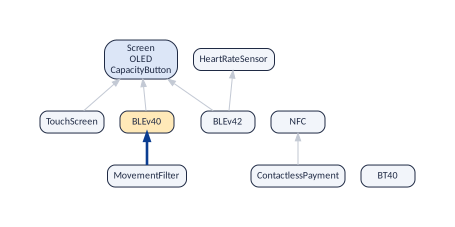
On Linux 3.13, the twelve most required options:
vp_genuine_hubs(linux, top = 12)
#> # A tibble: 12 x 5
#> feature required_by dominated_by share_through genuine
#> <chr> <int> <chr> <dbl> <lgl>
#> 1 NLATTR 1671 NET 0.999 FALSE
#> 2 GENERIC_NET_UTILS 1671 NET 0.999 FALSE
#> 3 NET 1669 <NA> NA TRUE
#> 4 DEVPORT 1558 <NA> NA TRUE
#> 5 PCI 1351 <NA> NA TRUE
#> 6 RT_MUTEXES 1002 I2C 0.996 FALSE
#> 7 I2C 997 <NA> NA TRUE
#> 8 NLS 909 <NA> NA TRUE
#> 9 CRYPTO 895 CRYPTO_ALGAPI2 0.972 FALSE
#> 10 CRYPTO_ALGAPI2 869 CRYPTO_ALGAPI 0.990 FALSE
#> 11 CRYPTO_ALGAPI 859 <NA> NA TRUE
#> 12 NETDEVICES 768 <NA> NA TRUENLATTR, the library of netlink attributes, is the most
required option of the kernel: 1,767 options require it (the table
counts each atomic set once, hence a smaller number). But
NET requires it, and of all those options only 2 reach it
without requiring NET as well (the figure):
share_through is 0.999. NLATTR is required
because networking is; NET is the genuine hub. The crypto
options show a chain: CRYPTO is dominated by
CRYPTO_ALGAPI2, which is dominated by
CRYPTO_ALGAPI, which is genuine. Follow
dominated_by until a genuine hub to find the feature whose
dependants they all are.
NLATTR is not a genuine hub of Linux 3.13. Almost all
its dependants reach it through NET (thick arrows); only 2
require it directly without requiring NET. NET
dominates it.
Why it matters. The list of the most required features is long and repetitive: many of its entries are there only because they sit below a big hub. The genuine hubs are the short list of features that really hold the model together, the ones whose review pays off. A fixed threshold such as “required by more than 10 % of the features” Sanchez et al. (2026) cannot make that distinction; domination can.
Limits: what this cannot tell you
Dominance is read from the requires graph, so it inherits its limits.
The threshold share is a choice: with 0.9, a hub required
by 11 features is dominated when 9 of the other 10 also require the same
feature. Try other values before drawing conclusions. A feature required
by a single feature is always dominated by it, which says little. Only
the top most required features are examined.
The warning zone
Function: vp_warning_zone()
The question. Which features are both highly required and highly demanding?
Such features are costly in both directions: many things break when
they change, and many things can break them Sanchez et al. (2026).
vp_warning_zone() returns the rows of the feature table in
the top tenth (top = 0.1) for both required_by
and requires. The band is too small to have any. Linux 3.13
has 140 options in the zone; the most extreme ones first:
wz <- vp_warning_zone(linux)
nrow(wz)
#> [1] 140
wz |>
arrange(desc(required_by * requires)) |>
select(feature, required_by, requires) |>
head(5)
#> # A tibble: 5 x 3
#> feature required_by requires
#> <chr> <int> <int>
#> 1 SND_SOC_DA7210 63 115
#> 2 SND_SOC_WM5100 63 115
#> 3 SND_SOC_MAX9850 63 115
#> 4 SND_SOC_WM8900 63 115
#> 5 SND_SOC_WM8991 63 115
The cluster at the top of the zone is a family of sound codec drivers
(SND_SOC_*): each requires more than a hundred options, and
each is required by more than sixty. A change to any of them reaches
many options, and a change to any of their many requirements can break
them: they are the places of the kernel where a careless edit costs
most.
Why it matters. A feature that both is needed by many and needs many sits at a crossing: an error in it spreads to its dependants, and a change in any of its requirements reaches it. In a product line those are the features where a careless edit costs most, which deserve the first reviews, the most tests and the most careful evolution.
Limits: what this cannot tell you
“Top tenth” is relative to the model: every model has a warning zone, however healthy. Compare its size between models or versions rather than read it alone. The counts behind it are those of the requires graph.
Layers and hierarchy
This section is about the shape of the requires graph: how its features are layered, from those that need nothing to those that need long chains of others. That shape has a name in mathematics, a partial order Davey and Priestley (2002), and a few classic results about partial orders answer practical questions about variability models. You need none of the theory to use the functions, but the idea is simple, and it explains why the functions work.
What a partial order is, on the band
An order is a way of saying that one thing comes before another, like the numbers 1 < 2 < 3. “ requires ” can be read the same way: comes before , because must be there for to be there. Three properties make “requires” an order. Each one can be checked on the band:
band$requires |> filter(from == "MovementFilter")
#> # A tibble: 4 x 2
#> from to
#> <chr> <chr>
#> 1 MovementFilter Screen
#> 2 MovementFilter OLED
#> 3 MovementFilter CapacityButton
#> 4 MovementFilter BLEv40
band$requires |>
filter(from %in% c("Screen", "OLED"), to %in% c("Screen", "OLED"))
#> # A tibble: 2 x 2
#> from to
#> <chr> <chr>
#> 1 Screen OLED
#> 2 OLED Screen
vp_pair(band, "TouchScreen", "BT40") |> select(combination, possible)
#> # A tibble: 4 x 2
#> combination possible
#> <chr> <lgl>
#> 1 both FALSE
#> 2 only TouchScreen TRUE
#> 3 only BT40 TRUE
#> 4 neither TRUEIt chains (transitivity). If requires and requires , then requires . MovementFilter requires BLEv40, which requires the screen, and indeed the first table has the arrow from MovementFilter to Screen. variplex’s requires graph always holds every such arrow (it is complete).
It never goes round in a circle (antisymmetry), once an atomic set counts as one feature. The second table shows that the screen requires the OLED panel and the OLED panel requires the screen: they go round in a circle. But two features that require each other are always selected together, so for every choice they are one feature, an atomic set (Atomic sets). Merge each atomic set into one node, and no circle is left: if requires , then does not require .
Every feature “requires” itself (reflexivity): trivially, a product with has . It is a convention that makes the mathematics tidy; the graphs do not draw these arrows.
Why partial? Because in the order of the numbers, of any two numbers one comes before the other: the order is total, a single line. In a partial order, two features can be incomparable: neither requires the other. The last table shows that TouchScreen and BT40 are such a pair: there are bands with only one of them, so neither requires the other (in fact they cannot go together, but a conflict is not a requirement). Of the 36 pairs of the 9 nodes of the band (its atomic set counted once), only 7 are comparable; the other 29 are not.
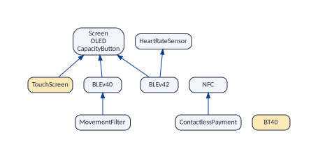
So a partial order is drawn not as a line but as a set of layers with arrows between them: the skeleton (the figure), which keeps only the arrows between immediate neighbours (in the theory of orders it is called the Hasse diagram). Everything in this section is a question about that drawing:
| Question about the drawing | Function, and the result of order theory behind it |
|---|---|
| Which features are one node? |
vp_atomic_sets(): the features that go
round in a circle. |
| Which arrows are between immediate neighbours? |
vp_skeleton(): the Hasse diagram
(transitive reduction Aho et al. (1972)). |
| In which layer is each feature, and how many layers are there? |
vp_levels(), vp_depth(): the
length of the longest chain (Mirsky’s theorem Mirsky (1971), A safe order for the
questions). |
| How many features are pairwise incomparable, at most? |
vp_width(): the largest antichain, equal
to the fewest chains that cover all the features (Dilworth’s theorem Dilworth (1950)). |
| Which features are at the top and at the bottom? |
vp_foundations(),
vp_leaves(): the maximal and minimal elements. |
| What comes with a feature, and what depends on it? |
vp_upset(), vp_downset(): the
up-set and the down-set of the feature. |
| And with the conflicts too? |
vp_largest_free_set() and
vp_longest_decision_chain(): the counterparts of the width
and the depth with the three graphs (Width and
chains and Levels, depth and the longest
chain). |
Atomic sets
Function: vp_atomic_sets()
The question. Which features are really one single decision?
An atomic set is a group of features that require each other, so a product has all of them or none Benavides et al. (2010); Heß and Molt (2025):
vp_atomic_sets(band)
#> # A tibble: 3 x 3
#> set feature representative
#> <int> <chr> <chr>
#> 1 1 Screen Screen
#> 2 1 OLED Screen
#> 3 1 CapacityButton ScreenScreen, OLED and CapacityButton are one
decision. The first, Screen, is the
representative: it stands for the set in the skeleton and
in the other functions of this section. The sets come from the file
__atomic.txt, or are computed from the requires graph when
there is no such file.
Why it matters. An atomic set is one decision disguised as several features. For a configurator it means one question instead of several; for testing, one value to vary instead of several; for every analysis of the vignettes, one node. Large atomic sets also hint at features that could be merged, or at constraints written so tightly that options can no longer be chosen apart.
Limits: what this cannot tell you
Exact: every group of features that are always selected together is
found, and nothing else. But the atomic sets are about features that are
selected together; features that are always opposite
(one exactly when the other is not, like Screen and
BT40) are no atomic set. vp_pair() (Everything about two
features) finds them.
The skeleton
Function: vp_skeleton()
The question. Which dependencies carry information, and which ones follow from others?
The requires graph is complete (property P1, Three properties of the graphs). The skeleton keeps only the arrows that do not follow from a chain of others (the transitive reduction Aho et al. (1972)), with each atomic set as one feature:
vp_skeleton(band)
#> # A tibble: 6 x 2
#> from to
#> <chr> <chr>
#> 1 TouchScreen Screen
#> 2 ContactlessPayment NFC
#> 3 MovementFilter BLEv40
#> 4 BLEv40 Screen
#> 5 BLEv42 Screen
#> 6 BLEv42 HeartRateSensor
vp_implied_requires(band)
#> # A tibble: 1 x 3
#> from to via
#> <chr> <chr> <chr>
#> 1 MovementFilter Screen BLEv40Of the 21 arrows, 6 are in the skeleton (the figure).
vp_implied_requires() lists the arrows between different
features that follow from others, and one feature they pass through:
MovementFilter requires Screen via
BLEv40. The other arrows that are not in the skeleton are
inside the atomic set. The skeleton is the same as the file
__requires_skeleton.net of variplex.
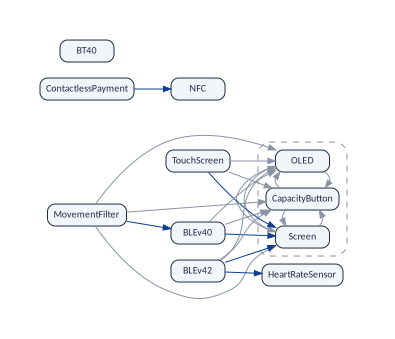
The skeleton is close to what somebody had to write; the complete graph is what everybody has to live with. Compare their sizes and you know how much of the model is implicit (The whole model in numbers).
Why it matters. The skeleton separates the dependencies that someone had to decide from those that merely follow. Its size against the complete graph measures how much of the model is implicit, which is what makes a model hard to understand by reading it one constraint at a time; and its arrows are the ones to look at when a dependency has to be changed.
Limits: what this cannot tell you
The skeleton is not the list of constraints of the model: an arrow of the skeleton can come from a rule over three features (BLEv42 requires HeartRateSensor is in the skeleton, and no constraint says so), and a constraint that the others imply leaves no arrow of its own. “Follows from a chain of arrows” is the only kind of redundancy it removes: an arrow that follows from a conflict and an at-least-one line stays (Why two features exclude each other).
Levels, depth and the longest chain
Function: vp_levels()
The question. How is the model layered? How long can a line of reasoning get?
The level of a feature is the length of the longest chain of requirements that starts from it: level 0 for a feature that needs nothing, level 1 for one that needs only features of level 0, and so on. The depth is the number of features in the longest chain:
vp_levels(band) |> arrange(level)
#> # A tibble: 11 x 2
#> feature level
#> <chr> <int>
#> 1 Screen 0
#> 2 OLED 0
#> 3 CapacityButton 0
#> 4 HeartRateSensor 0
#> 5 BT40 0
#> 6 NFC 0
#> 7 TouchScreen 1
#> 8 ContactlessPayment 1
#> 9 BLEv40 1
#> 10 BLEv42 1
#> 11 MovementFilter 2
vp_depth(band)
#> [1] 3
vp_longest_chain(band)
#> # A tibble: 3 x 2
#> step feature
#> <int> <chr>
#> 1 1 MovementFilter
#> 2 2 BLEv40
#> 3 3 ScreenThe band has three layers. MovementFilter is alone at the top: it requires BLEv40, which requires Screen. That is the longest chain, with three features. The figure draws the skeleton in its levels.
).](figures/am_levels.svg){#fig:levels}
Why it matters. The depth is the longest line of reasoning a user, a developer or a configurator has to follow to see why a feature is forced: a model of depth 17, like Linux, can force an option through 15 intermediate ones. Deep models are harder to explain, to configure step by step (the safe order of A safe order for the questions needs one round per level) and to change, because an edit at the bottom reaches everything above. Depth plays the role of the depth of a feature tree, but it follows the meaning, so it exists for any model, Kconfig included.
Limits: what this cannot tell you
A chain is made of arrows, so a rule over three features that would lengthen a chain (“A needs B or C, and both B and C need D” does make A need D, and the graph has that arrow) counts only through the arrows it implies. Depth also depends on how the model was translated into a formula: two translators of the same Kconfig model can give different depths.
So depth is a warning flag, not a verdict: a large depth says “long explanations live here, look closer”. It sees only arrows of the requires graph, while a conflict can force a decision just as well. The next paragraphs show how to look closer.
After the flag: chains with conflicts too. A
requirement “A requires B” is one way a decision forces another. There
are three more, all in the graphs: a conflict (“A excludes B”: selecting
A forces leaving B out), an at-least-one line (“A or B”: leaving A out
forces selecting B), and the contrapositive of each (leaving B out
forces leaving A out). vp_mig(), the modal implication
graph (The modal
implication graph (MIG)), puts them all in one graph whose nodes are
decisions: “A” (A selected) and “not A” (A left out).
vp_longest_decision_chain() finds the longest line of
decisions in it, each forcing the next. Decisions that force each other
(opposites, atomic sets) are one step, written together with “=”:
vp_longest_decision_chain(band)
#> # A tibble: 3 x 2
#> step decisions
#> <int> <chr>
#> 1 1 BT40 = not CapacityButton = not OLED = not Screen
#> 2 2 not BLEv40
#> 3 3 not MovementFilter
vp_longest_decision_chain(history$model[[7]]) # the Mi Band 8
#> # A tibble: 7 x 2
#> step decisions
#> <int> <chr>
#> 1 1 BLEv52
#> 2 2 SpO2
#> 3 3 Photoplethysmogram
#> 4 4 AMOLED = CapacitivitySensing = FullColor = Gyroscope = ProximitySensor
#> 5 5 not CapacityButton = not OLED
#> 6 6 not BLEv40
#> 7 7 not MovementFilter
vp_depth(history$model[[7]])
#> [1] 6On the band the length is the same as the depth, 3, but the chain is another one, and it goes through a conflict: a band without a screen has the classic Bluetooth (BT40), which excludes BLEv40, and without BLEv40 there is no movement filter. Depth, which reads only arrows of the requires graph, sees “MovementFilter requires BLEv40 requires Screen” and nothing else.
On the Mi Band 8 the chain of decisions is longer than the depth: 7 steps against 6. Selecting Bluetooth 5.2 forces SpO2, which forces the photoplethysmogram, which forces the AMOLED screen and its four companions; so far, requirements. Then a conflict: AMOLED and OLED are alternatives, so OLED and its capacity button are left out, and with them BLEv40 and the movement filter. Two of the seven steps are invisible to the depth.
| Model | Depth | Longest chain of decisions | What the extra steps are |
|---|---|---|---|
| Mi Band 3 | 3 | 3 | none, but another chain, through a conflict |
| Mi Band 8 | 6 | 7 | a conflict between the screen types |
| Linux 3.13 | 17 | 17 | none |
What is still missing. The chain of decisions is
built from pairs too. A decision that is forced only by two decisions
together (“A and B together exclude C”, a rule over three
features) is in no graph, and a chain that needs it is not found. When
the chain matters (for example, to bound the number of questions a
configurator may have to explain), the last check is the formula itself:
take the first decision of the chain, give it to a SAT solver as an
assumption, and let the solver propagate (on the DIMACS file that
vp_generate() keeps with keep_dimacs = TRUE);
what it forces is the whole consequence, rules over three features
included. Measures that count by pairs, depth and chain alike, can only
be shorter than that.
Width and chains
Function: vp_width()
The question. How many decisions are independent of one another, as far as dependencies go?
Depth measures how tall the hierarchy is: the longest line of features each requiring the next. Width measures how broad it is. Call two features related when one requires the other, directly or through a chain. A set of features is unrelated when no two of its features are related: none of them, if selected, forces another one of the set. The width is the size of the largest unrelated set.
vp_width(band)
#> [1] 5
vp_largest_unrelated_set(band)
#> # A tibble: 5 x 1
#> feature
#> <chr>
#> 1 TouchScreen
#> 2 HeartRateSensor
#> 3 BLEv40
#> 4 BT40
#> 5 NFC
vp_chains(band)
#> # A tibble: 9 x 3
#> chain position feature
#> <int> <int> <chr>
#> 1 1 1 TouchScreen
#> 2 1 2 Screen
#> 3 2 1 ContactlessPayment
#> 4 2 2 NFC
#> 5 3 1 MovementFilter
#> 6 3 2 BLEv40
#> 7 4 1 BLEv42
#> 8 4 2 HeartRateSensor
#> 9 5 1 BT40The largest unrelated set of the band has five features: TouchScreen, HeartRateSensor, BLEv40, BT40 and NFC (shaded in the figure). Check any pair: the touch screen requires only the screen, BLEv40 only the screen, the three others nothing, so no feature of the set requires another one of the set.
Why no sixth feature fits. vp_chains() splits
the nine nodes of the skeleton (the atomic set is one) into
chains: lists in which each feature requires the next.
Two features of the same chain are always related, so an unrelated set
can take at most one feature from each chain. There are five
chains, so no unrelated set has more than five features:
| Chain | Its features | In the unrelated set |
|---|---|---|
| 1 | TouchScreen → screen | TouchScreen |
| 2 | ContactlessPayment → NFC | NFC |
| 3 | MovementFilter → BLEv40 | BLEv40 |
| 4 | BLEv42 → HeartRateSensor | HeartRateSensor |
| 5 | BT40 | BT40 |
The unrelated set of five shows that the width is at least 5; the five chains show that it is at most 5. Dilworth’s theorem says that this always happens: the largest unrelated set and the fewest chains that cover all the features have the same size Dilworth (1950). So the two outputs prove each other, and the width is exactly 5.
What it tells. The width is the number of decisions that dependencies leave independent of one another: a configurator can show the five features of the set side by side, and no answer about one of them forces an answer about another (as far as requirements go). A width close to the number of features means a flat model, a long list of independent choices; a small width means a model organised in a few long lines, each a chain of specialisations from a basic feature to its most demanding variants.
Depth and width together describe the shape of a model. A model of features always has , so a large model cannot be both shallow and narrow. Shallow and wide means many independent decisions, each easy to explain; deep and narrow, few decisions with long chains of consequences. The band, with depth 3 and width 5 for 9 nodes, is shallow and wide; so is BusyBox (depth 4, width 427 for 623 features); Linux 3.13 is deep and wide (depth 17, width 4,843).
Limits: what this cannot tell you
Width looks only at dependencies. Two features that count as unrelated may still exclude each other, or be tied by a rule over three features: “independent” here means “neither requires the other”, not “free to combine”.
So width is a warning flag, an upper bound: the number of truly free decisions is at most the width, and may be much less. The next paragraphs show how to bring conflicts and at-least-one lines in.
After the flag: free, not just unrelated. Call two
features free when the four combinations (both, only
the first, only the second, neither) all occur in valid products: then
no graph links them, neither requires, excludes nor at-least-one. A set
is free when every two of its features are.
vp_largest_free_set() finds the largest one, with the three
graphs:
vp_largest_free_set(band)
#> # A tibble: 4 x 1
#> feature
#> <chr>
#> 1 TouchScreen
#> 2 ContactlessPayment
#> 3 HeartRateSensor
#> 4 BLEv40
nrow(vp_largest_free_set(history$model[[7]])) # the Mi Band 8
#> [1] 3
vp_width(history$model[[7]])
#> [1] 7The band has four free features against a width of five. (Do not
confuse it with the largest compatible set of Conflicts,
vp_largest_compatible_set(): compatible features only need
to go together, free features must also be able to go apart, in every
combination.) BT40 is gone from the set: it is unrelated to
BLEv40 (neither requires the other), but the two exclude each
other, since a band has one kind of Bluetooth. (NFC is replaced
by ContactlessPayment: the two are in the same chain, so either
one fits.) On the Mi Band 8 the gap is wide: width 7, but only 3 free
features. The Bluetooth versions are unrelated, which makes the width
large, and they are alternatives, which makes them anything but
free.
| Model | Width | Largest free set | Why they differ |
|---|---|---|---|
| Mi Band 3 | 5 | 4 | BT40 excludes BLEv40 |
| Mi Band 8 | 7 | 3 | the Bluetooth versions are alternatives |
| Linux 3.13 | 4,843 | at least 4,397 | conflicts (search not exact at this size) |
The third level: free in pairs is not free together.
Every two features of a free set take their four combinations; that does
not mean the whole set takes its
combinations. A rule over three features can forbid one. With the 24
products of the band (the table products of Measuring each feature) the check is a
count:
free <- vp_largest_free_set(band)$feature
products |> count(across(all_of(free)))
#> TouchScreen ContactlessPayment HeartRateSensor BLEv40 n
#> 1 0 0 0 0 2
#> 2 0 0 0 1 2
#> 3 0 0 1 0 4
#> 4 0 0 1 1 2
#> 5 0 1 0 0 1
#> 6 0 1 0 1 1
#> 7 0 1 1 0 2
#> 8 0 1 1 1 1
#> 9 1 0 0 1 2
#> 10 1 0 1 0 2
#> 11 1 0 1 1 2
#> 12 1 1 0 1 1
#> 13 1 1 1 0 1
#> 14 1 1 1 1 1Fourteen of the sixteen combinations occur. The two missing ones are a touch screen with neither the heart-rate sensor nor BLEv40. A band with a screen cannot have the classic Bluetooth, so it has BLE, and the model says “BLE needs the heart-rate sensor or the movement filter”; the movement filter needs BLEv40. So a touch screen needs the sensor or BLEv40: a rule over three features that no pair shows. So, of the four free features, a configurator can offer any two side by side, but not all four as independent switches.
When the products cannot be listed, the same question goes to the formula: one call of a SAT solver per combination ( calls, with each combination given as assumptions), or one call of a model counter such as GANAK per combination, which also says how many products have it. For up to about 15 this is quick. It is the only exact answer: the graphs can flag the problem, and the formula settles it.
Limits: what this cannot tell you
vp_largest_free_set() solves a hard problem (a largest
independent set). Up to 60 variable features (exact_limit)
the search is exact; above it, a greedy search gives a free set that
cannot be extended, and the largest one may be larger: on Linux the
answer is a lower bound. It is also about pairs, and the third level
above is what it cannot see.
How it works inside
The width comes from a maximum matching in a graph with two copies of
each feature, one as “requires” and one as “is required”
(igraph::max_bipartite_match()): each matched pair is a
link of a chain, so the chains are the features minus the matched pairs.
König’s theorem turns the same matching into a largest set of unrelated
features. The depth comes from one pass over the features in topological
order. Both are fast on Linux.
Foundations and leaves
Function: vp_foundations()
The question. Which features are the base of everything, and which ones could be removed without breaking anything?
vp_foundations(band)
#> # A tibble: 4 x 1
#> feature
#> <chr>
#> 1 Screen
#> 2 HeartRateSensor
#> 3 BT40
#> 4 NFC
vp_leaves(band)
#> # A tibble: 5 x 1
#> feature
#> <chr>
#> 1 TouchScreen
#> 2 ContactlessPayment
#> 3 MovementFilter
#> 4 BLEv42
#> 5 BT40Foundations need nothing: every chain of requirements ends in one of them. Leaves are needed by nothing: removing one breaks no other feature. Some features are both, like BT40: in the skeleton they stand alone.
Why it matters. Foundations are where the product line starts: the features every chain of requirements ends in, which must be designed, tested and kept stable first. Leaves are where it ends: features nothing depends on, which can be removed or changed without breaking another feature, and where new features are usually attached. The two lists are the two ends of a refactoring or a clean-up.
Limits: what this cannot tell you
“Removing a leaf breaks no other feature” is true of the requires graph. A rule over three features (“A needs B or C”) can still lean on a leaf: remove C, and A needs B.
What a selection drags in, and what depends on it
Function: vp_upset()
The question. If I select these features, what else comes with them? If I change this feature, what is affected?
The up-set of some features is themselves and
everything they require; the down-set is themselves and
everything that requires one of them. vp_upset() says which
given feature brings each one; vp_downset() which given
feature each one depends on:
vp_upset(band, c("MovementFilter", "NFC"))
#> # A tibble: 6 x 2
#> feature brought_by
#> <chr> <chr>
#> 1 MovementFilter MovementFilter
#> 2 NFC NFC
#> 3 Screen MovementFilter
#> 4 OLED MovementFilter
#> 5 CapacityButton MovementFilter
#> 6 BLEv40 MovementFilter
vp_downset(band, "BLEv40")
#> # A tibble: 2 x 2
#> feature depends_on
#> <chr> <chr>
#> 1 BLEv40 BLEv40
#> 2 MovementFilter BLEv40The figure shows the up-set of the two features on the skeleton. Two
more functions find where two features meet:
vp_common_requirements(band, a, b) (what both need: shared
infrastructure) and vp_common_dependants(band, a, b) (what
needs both: where two parts of the model are tied together):
vp_common_requirements(band, "MovementFilter", "BLEv42")
#> # A tibble: 3 x 1
#> feature
#> <chr>
#> 1 Screen
#> 2 OLED
#> 3 CapacityButton
vp_common_dependants(band, "Screen", "HeartRateSensor")
#> # A tibble: 1 x 1
#> feature
#> <chr>
#> 1 BLEv42The movement filter and Bluetooth 4.2 share the screen and its atomic set (the figure); nothing requires both the screen and the heart-rate sensor except BLEv42.
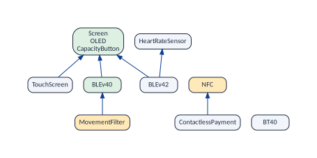
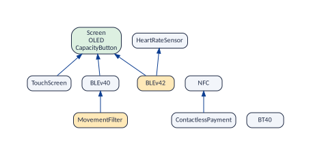
Why it matters. The up-set is what a customer really gets when choosing some features, and what a product will contain whether or not anyone asked for it; the down-set is everything a change to a feature can affect. Both are what impact analysis and configuration explanations are built on.
Limits: what this cannot tell you
The up-set is what selecting the features forces through
requirements. It is not everything a selection settles: it leaves
out what the features exclude (see vp_consequences(), What some decisions
force), and, through rules over three or more features, two
selections together can force a feature that neither forces alone.
A feature tree rebuilt from the graphs
Function: vp_feature_tree()
The question. What feature tree do the dependencies suggest? Useful for Kconfig, which has no tree, and to compare with the tree of a UVL model.
Each feature gets as parent one of the features it requires directly in the skeleton. When there are several candidates, the least required one is chosen (the simplest of the rules studied in the work on feature-model synthesis Czarnecki and Wąsowski (2007); She et al. (2011); Andersen et al. (2012)), and the others become cross-tree requirements:
vp_feature_tree(band)
#> # A tibble: 9 x 4
#> feature parent candidates cross_tree
#> <chr> <chr> <int> <chr>
#> 1 Screen <NA> 0 ""
#> 2 TouchScreen Screen 1 ""
#> 3 ContactlessPayment NFC 1 ""
#> 4 MovementFilter BLEv40 1 ""
#> 5 HeartRateSensor <NA> 0 ""
#> 6 BLEv40 Screen 1 ""
#> 7 BLEv42 HeartRateSensor 2 "Screen"
#> 8 BT40 <NA> 0 ""
#> 9 NFC <NA> 0 ""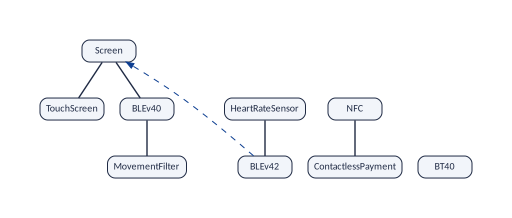
Compare with the figure. BLEv42 hangs from
HeartRateSensor instead of from BLE, which is abstract
and so not in the graphs, and the screen becomes a cross-tree
requirement. Screen, HeartRateSensor, BT40
and NFC need nothing, so they have no parent (NA):
they are the tops of the tree, where a feature model would hang them
from its root.
Models without a tree.
vp_feature_tree() reads only the graphs, never the file the
model came from, so it works on every model variplex accepts: UVL, a
DIMACS formula of any origin, or Kconfig (through its DIMACS
translation). The last two have no feature tree at all, and that is
where the function is most useful. BusyBox is a Kconfig model; the
package has only its graphs, from the published dataset (The examples), not its
Kconfig files nor its formula, and that is enough:
tree_bb <- vp_feature_tree(bb)
c(
features = nrow(tree_bb),
tops = sum(is.na(tree_bb$parent)),
one_candidate = sum(tree_bb$candidates == 1),
with_cross_tree = sum(tree_bb$cross_tree != "")
)
#> features tops one_candidate with_cross_tree
#> 602 177 375 50
tree_bb |> count(parent, sort = TRUE) |> filter(!is.na(parent)) |> head(3)
#> # A tibble: 3 x 2
#> parent n
#> <chr> <int>
#> 1 CONFIG_FIND 20
#> 2 CONFIG_VOLUMEID 19
#> 3 CONFIG_ASH 13
tree_bb |> filter(parent == "CONFIG_FIND") |> select(feature, parent) |> head(4)
#> # A tibble: 4 x 2
#> feature parent
#> <chr> <chr>
#> 1 CONFIG_FEATURE_FIND_PRUNE CONFIG_FIND
#> 2 CONFIG_FEATURE_FIND_XDEV CONFIG_FIND
#> 3 CONFIG_FEATURE_FIND_MTIME CONFIG_FIND
#> 4 CONFIG_FEATURE_FIND_MAXDEPTH CONFIG_FINDThe rebuilt tree gives BusyBox a shape from its graphs alone: each
applet (find, ash, hush) becomes
a parent, with its options as children. find alone has
twenty: -prune, -xdev, -mtime and
the rest. For the features with one candidate (375 of 602) there is only
one possible parent, so for them the tree is not a guess. The 177 tops,
features that need nothing, would hang from the root of a feature model,
and 50 features keep a cross-tree requirement.
For a model without a tree, this is a first feature diagram, to read the model or to start a UVL version of it. Whether the tree agrees with the menus of the Kconfig files is a separate question, which needs those files.
Using the rebuilt tree to refactor a model. A refactoring changes how a model is written and keeps its products: the same valid configurations, before and after Thüm et al. (2009). A common reason to refactor is to turn cross-tree constraints into tree edges. A constraint “A requires B” says, in the margin, what the tree could say by hanging A under B. Fewer constraints make a model easier to read, and the tree carries the meaning where the reader looks first.
The rebuilt tree is a list of such proposals. Every parent it chooses is a true requirement of the child, so hanging the child there never loses a product. The Mi Band 8 has 22 constraint lines. Its rebuilt tree and its graphs suggest three of them can go:
tree8_rebuilt <- vp_feature_tree(history$model[[7]])
tree8_rebuilt |> filter(feature %in% c("SpO2", "ContactlessPayment"))
#> # A tibble: 2 x 4
#> feature parent candidates cross_tree
#> <chr> <chr> <int> <chr>
#> 1 ContactlessPayment TouchScreen 1 ""
#> 2 SpO2 Photoplethysmogram 1 ""
vp_atomic_sets(history$model[[7]]) |>
filter(feature %in% c("NFC", "ContactlessPayment"))
#> # A tibble: 2 x 3
#> set feature representative
#> <int> <chr> <chr>
#> 1 3 ContactlessPayment ContactlessPayment
#> 2 3 NFC ContactlessPaymentSpO2 hangs from Sensors in the model and needs the photoplethysmogram through the constraint
SpO2 => Photoplethysmogram. The rebuilt tree puts it under Photoplethysmogram. Move it there as an optional child, and the constraint goes.NFC and ContactlessPayment are an atomic set: two constraints say that each requires the other. Make NFC a mandatory child of ContactlessPayment, and both constraints go.
The changes, from the realized model to the refactored one:
| Where | Before | After |
|---|---|---|
| NFC | optional child of Connectivity | mandatory child of ContactlessPayment |
| SpO2 | optional child of Sensors | optional child of Photoplethysmogram |
| Constraints | NFC => ContactlessPayment |
deleted |
ContactlessPayment => NFC |
deleted | |
SpO2 => Photoplethysmogram |
deleted |
Check that it is a refactoring. Run variplex on both
models (the new one is
vp_example("miband8_refactored.uvl")), with
representativeness = TRUE so that it counts the products
(this needs the model counter GANAK), and compare. Identical graphs and
the same number of products are two necessary conditions:
before <- vp_generate(
vp_example("miband8_realized.uvl"),
or_graph = TRUE,
representativeness = TRUE
)
after <- vp_generate(
vp_example("miband8_refactored.uvl"),
or_graph = TRUE,
representativeness = TRUE
)
vp_compare(before, after) |>
select(graph, added, removed, gained, lost, jaccard)
#> # A tibble: 3 x 6
#> graph added removed gained lost jaccard
#> <chr> <int> <int> <int> <int> <dbl>
#> 1 requires 0 0 0 0 1
#> 2 excludes 0 0 0 0 1
#> 3 atleastone 0 0 0 0 1
c(
before = vp_representativeness(before)$vm_configurations,
after = vp_representativeness(after)$vm_configurations
)
#> before after
#> 21 21No feature added or removed, no link gained or lost, 21 products before and after. Neither condition alone proves the refactoring: two formulas can have the same graphs and differ in a rule over three features, and two formulas can have the same number of products and different products. The proof is that each formula implies the other, which a SAT solver checks in two calls Thüm et al. (2009). For this small model the 21 products of each version were listed and compared for the vignettes: they are the same.
Where not to follow the tree. The rebuilt tree also hangs the photoplethysmogram under the AMOLED screen, and the gyroscope and the proximity sensor are in the atomic set of the AMOLED screen, so the graphs would make them mandatory children of the screen. Both moves keep the products, and both remove constraints. Both are bad trees: a sensor is not a part of a screen. The constraints say a business fact (the premium screen comes with premium sensors), not a part-of relation, and a tree that hides that fact behind a part-of edge misleads the reader. The graphs propose by meaning; the designer decides by the domain.
Why it matters. Feature models are read through their trees, and models from Kconfig or plain formulas have none. A tree rebuilt from the meaning gives such models a first diagram, and for UVL models it is a second opinion on the declared tree: where the two disagree, either the tree hides a layer or a refactoring is possible.
Limits: what this cannot tell you
A tree is a proposal, not a discovery. The graphs give each feature its candidate parents; the choice among them is a rule of thumb. The rebuilt tree finds where a feature can hang without losing products; it does not say where it should.
Groups of the model (“exactly one of these children”) are rules over many features, so the rebuilt tree has no groups: the alternatives appear as conflicts between siblings. Abstract features, left out of the graphs, cannot become parents. Both have to be added by hand.
A refactoring must be proved on the formula, as above: the graphs are evidence, not proof.
Operations that need the feature tree
The next three operations need the tree of the model, read with
vp_read_uvl_tree(). Do not confuse it with
vp_feature_tree(): they have similar names and answer
opposite questions.
vp_read_uvl_tree(file) |
vp_feature_tree(model) |
|
|---|---|---|
| Reads | the UVL file, as written by its designer | the graphs that variplex computed |
| Answers | “what tree did the designer draw?” | “what tree does the meaning suggest?” |
| Features | all of them: abstract, core and dead too | only those in the graphs (variable, concrete) |
| Kinds of child | mandatory, optional, alternative, or | none: every parent is a requirement; |
(the relation column) |
the rest goes to cross_tree
|
|
| Works on Kconfig | no (Kconfig has no UVL tree) | yes |
| Is it the truth? | it is the model, whatever it means | a proposal: a rule of thumb picks the parent |
vp_read_uvl_tree() does not look at the graphs at all,
and vp_feature_tree() does not look at the UVL file. The
operations of this subsection put the two side by side: the drawing of
the model against what its constraints mean.
False-optional features
Function: vp_false_optional()
The question. Which features are declared optional and are not?
A classic analysis of feature models Benavides et al. (2010). Two definitions are in use: an optional feature is false-optional when it is in every product, or, the definition that Nieke et al. consider more sensible Nieke et al. (2018), when it is selected whenever its parent is. The graphs decide both: the first is the list of core features, the second an arrow from the parent to the child. uClibc, one of the examples of variplex, has both kinds:
uclibc <- vp_read("uclibc/uClibc")
tree_u <- vp_read_uvl_tree("data/uClibc.uvl")
vp_false_optional(uclibc, tree_u)
#> # A tibble: 6 x 4
#> feature parent in_every_product whenever_parent
#> <chr> <chr> <lgl> <lgl>
#> 1 ARCH_HAS_NO_SHARED root TRUE TRUE
#> 2 UCLIBC_HAS_LOCALE root TRUE TRUE
#> 3 ARCH_HAS_NO_LDSO root TRUE TRUE
#> 4 UCLIBC_UCLINUX_BROKEN_MUNMAP root TRUE TRUE
#> 5 UCLIBC_HAS_CRYPT UCLIBC_HAS_CRYPT_IMPL FALSE TRUE
#> 6 UCLIBC_HAS_FPU UCLIBC_HAS_FLOATS FALSE TRUEThe rows with in_every_product TRUE are
core: every product has them, although the tree says they are optional.
The others are selected in every product that has their parent: a C
library with crypt support always has the crypt implementation, and one
with floating point always has the option of the FPU.
Why it matters. A false-optional feature is a defect of a feature model in the classic catalogue: the tree promises a choice that the constraints take away. Users are offered an option that is not one, documentation describes variability that does not exist, and tests may be planned for configurations that cannot be built.
Limits: what this cannot tell you
Exact for both definitions, when the parent is in the graphs. When
the parent is abstract (left out of the graphs), the second definition
cannot be checked and whenever_parent is NA;
run vp_generate() with abstract = "keep" to
keep the abstract features.
Does the tree hide layers?
Function: vp_tree_agreement()
The question. Is each feature’s declared parent its immediate requirement, or do other features stand in between?
In a feature tree a child requires its parent. When the child reaches its parent only through other features (it requires something that requires the parent), the tree hides a layer of the hierarchy: a “hierarchy violation” in the sense of Berger and Guo Berger and Guo (2014), measured by meaning. The Mi Band 8 has one:
band8 <- history$model[[7]]
tree8 <- vp_read_uvl_tree("data/miband8_realized.uvl")
vp_tree_agreement(band8, tree8)
#> # A tibble: 3 x 4
#> feature parent direct in_between
#> <chr> <chr> <lgl> <chr>
#> 1 TouchScreen Screen TRUE ""
#> 2 FullColor TouchScreen TRUE ""
#> 3 Photoplethysmogram HeartRateSensor FALSE "AMOLED, TouchScreen"The tree puts the photoplethysmogram sensor under the heart-rate
sensor (the figure), but the constraints make it need the AMOLED screen,
which needs the touch screen, which needs the heart-rate sensor. The
share of FALSE rows measures how far the drawing of a model
is from its meaning.
Why it matters. People read a feature model by its
tree, so a hidden layer is a hidden cost, and each FALSE
row is worth a look for one of these reasons:
The reader is misled. The tree shows the photoplethysmogram as a small option of the heart-rate sensor. In fact, selecting it brings in the AMOLED screen, the touch screen, a Bluetooth 5 version, the gyroscope and the proximity sensor. A product manager who prices the option by the tree prices it wrong.
The configurator asks in the wrong order. A configurator that follows the tree asks about the heart-rate sensor, then about the photoplethysmogram, and only later about the screen. A user who says yes to the photoplethysmogram then finds the screen already decided, or, if the screen was asked first and refused, finds the option disabled for no visible reason. The safe order of A safe order for the questions asks about the screen first.
It may be a bug. Either the tree is out of date (the feature has moved in the product, and the drawing has not followed: a refactoring candidate, see
vp_feature_tree()), or a constraint is stronger than intended. Here the constraint isPhotoplethysmogram => BLEv50 | BLEv52 | BLEv51, about Bluetooth. It drags in the screen only because another constraint ties those Bluetooth versions to the AMOLED screen. That is probably a fact of the product line, but it is worth a question to its designer.It tracks drift. Across versions, a growing share of
FALSErows means the drawing and the meaning are drifting apart, the erosion that Berger and Guo measured in real models Berger and Guo (2014).
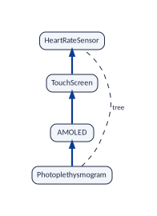
Limits: what this cannot tell you
Only pairs whose child and parent are both in the graphs are compared: abstract parents, and core ones, are left out. The comparison is with the skeleton, so it inherits its limit: a rule over three features does not appear as a layer.
Candidate redundant constraints
Function: vp_redundant_candidates()
The question. Which constraints of the model say nothing new, and could be deleted without changing its products?
What a redundant constraint is. Suppose a model says “the movement filter requires BLE 4.0” and “BLE 4.0 requires the screen”. If someone also writes “the movement filter requires the screen”, that third constraint is redundant: it follows from the other two, so deleting it leaves exactly the same products. Redundant constraints are common in models that many people edit over the years. They do no harm to the products, but they make the model longer to read, and they mislead: whoever later changes “BLE 4.0 requires the screen” may not notice that a copy of its consequence is written elsewhere, and may wonder why the movement filter still needs the screen.
The rule. A written requirement “A requires B” is redundant, in this sense, when A reaches B through a chain of other requirements, A X B. The skeleton (The skeleton) is exactly the set of arrows that no such chain explains. So the test is simple: a written requirement that is not an arrow of the skeleton is redundant; one that is an arrow of the skeleton carries information of its own.
What to give it. The graphs do not know which
constraints were written; you tell the function, as a tibble with the
columns from and to, one row per written
requirement “from requires to”. A first
example on the band: five requirements someone might have written, among
them the third constraint of the story above, and one that is false:
written_band <- tribble(
~from , ~to ,
"MovementFilter" , "BLEv40" ,
"MovementFilter" , "Screen" ,
"ContactlessPayment" , "NFC" ,
"OLED" , "Screen" ,
"TouchScreen" , "BLEv40"
)
vp_redundant_candidates(band, written_band)
#> # A tibble: 5 x 5
#> from to in_graphs redundant via
#> <chr> <chr> <lgl> <lgl> <chr>
#> 1 MovementFilter BLEv40 TRUE FALSE ""
#> 2 MovementFilter Screen TRUE TRUE "BLEv40"
#> 3 ContactlessPayment NFC TRUE FALSE ""
#> 4 OLED Screen TRUE FALSE "same atomic set"
#> 5 TouchScreen BLEv40 FALSE FALSE ""Read it with the skeleton of the band in the figure:
| Written requirement | What the columns say |
|---|---|
| MovementFilter → BLEv40 |
in_graphs TRUE: the model
implies it. redundant FALSE: it is an arrow of
the skeleton, no other chain gives it. Keep it. |
| MovementFilter → Screen |
redundant TRUE,
via BLEv40: the chain MovementFilter →
BLEv40 → screen already gives it. A candidate for
deletion. |
| ContactlessPayment → NFC | Not redundant: nothing else makes contactless payment need NFC. |
| OLED → Screen |
via “same atomic set”: the two are always
selected together, so each requires the other and neither arrow can be
removed without changing what the set means. Not a candidate. |
| TouchScreen → BLEv40 |
in_graphs FALSE: the model
does not imply it (there are bands with a touch screen and BLE
4.2). A written requirement that the graphs do not hold means that the
list you gave does not match the model: a typo, a constraint from
another version, or a constraint that something else overrides. Worth
checking, for the opposite reason. |
On a real model. In a UVL model, the written
requirements are of two kinds: the edges of the tree (a child requires
its parent) and the cross-tree constraints of the form
A => B. A constraint such as
MovementFilter => !HeartRateSensor & BLEv40 contains
one requirement, MovementFilter → BLEv40, and a
conflict, which is not a requirement. The Mi Band 8, with the tree edges
between features that can vary (core and abstract features are not in
the graphs) and three of its constraints:
vars <- vp_features(band8) |> filter(status == "variable") |> pull(feature)
# the tree: a child requires its parent
written <- tree8 |>
filter(feature %in% vars, parent %in% vars) |>
select(from = feature, to = parent) |>
# and three constraints
bind_rows(tibble(
from = c("MovementFilter", "SpO2", "BLEv52"),
to = c("BLEv40", "Photoplethysmogram", "SpO2")
))
vp_redundant_candidates(band8, written)
#> # A tibble: 8 x 5
#> from to in_graphs redundant via
#> <chr> <chr> <lgl> <lgl> <chr>
#> 1 CapacityButton OLED TRUE FALSE "same atomic set"
#> 2 CapacitivitySensing AMOLED TRUE FALSE "same atomic set"
#> 3 TouchScreen Screen TRUE FALSE ""
#> 4 FullColor TouchScreen TRUE FALSE ""
#> 5 Photoplethysmogram HeartRateSensor TRUE TRUE "AMOLED"
#> 6 MovementFilter BLEv40 TRUE FALSE ""
#> 7 SpO2 Photoplethysmogram TRUE FALSE ""
#> 8 BLEv52 SpO2 TRUE FALSE ""One candidate: the tree edge from the photoplethysmogram sensor to
the heart-rate sensor, redundant via the AMOLED screen. It
is the hidden layer of the previous operation seen from the other side:
the constraints already make the sensor need the AMOLED screen, which
needs the touch screen, which needs the heart-rate sensor, so the tree
edge adds nothing. A tree edge cannot simply be deleted (every feature
hangs from somewhere), but it can be moved: hang the photoplethysmogram
sensor under the AMOLED screen, as the rebuilt tree suggests (A feature tree rebuilt from the graphs), and the
hierarchy says what the constraints mean. The other written requirements
carry information of their own, or join features of one atomic set.
Why it matters. A redundant constraint is one more line to read and one more place to update: whoever changes one of the constraints it repeats must find it too, or the model ends up saying two different things. Finding the redundant ones lets a model say each thing once.
Before deleting. Treat each candidate as a proposal and confirm it the way a refactoring is confirmed: delete the constraint, run variplex on both versions and check that the graphs and the number of products are the same, or, for a proof, that each formula implies the other.
Limits: what this cannot tell you
“Redundant” here means “implied by a chain of requirements”. A requirement can also follow from a conflict and an at-least-one line (
vp_requires_from_conflicts(), Conflicts), or from rules over three features; those stay arrows of the skeleton and are not flagged. So aFALSEinredundantdoes not prove that the constraint is needed.It only examines requirements between two features: a constraint over three or more features, or a conflict, cannot be given to it.
The same requirement written twice (two constraints that say the same) is one arrow of the graphs: give the list without duplicates, and look for duplicates in the text of the model.
Removing one redundant constraint can make another one necessary: if
A => B,B => CandA => Care written andB => Cis later deleted,A => Cstops being redundant. Delete one at a time, and check after each.
The whole model in numbers
One row per model
Function: vp_summary()
The question. How does this model compare with others? Has it become more entangled from one version to the next?
vp_summary() sums a model up in one row. Give it several
models, with names, and it stacks their rows. The band, the last month
of BusyBox and Linux 3.13, side by side (t() turns the
table so that each model is a column):
s <- vp_summary(band = band, busybox = bb, linux = linux)
s |> select(-form) |> tibble::column_to_rownames("model") |> t() |> round(3)
#> band busybox linux
#> features 11.000 623.000 7100.000
#> core 8.000 8.000 136.000
#> dead 0.000 0.000 2181.000
#> atomic_sets 1.000 18.000 301.000
#> requires 21.000 735.000 88018.000
#> excludes 10.000 131.000 57667.000
#> atleastone 3.000 NA 899.000
#> skeleton 6.000 478.000 11403.000
#> primitive_conflicts 3.000 38.000 578.000
#> implicit_requires 0.143 0.186 0.778
#> implicit_excludes 0.625 0.686 0.985
#> density_requires 0.191 0.002 0.002
#> density_excludes 0.182 0.001 0.002
#> depth 3.000 4.000 17.000
#> width 5.000 427.000 4843.000
#> cross_tree_share 0.167 0.111 0.444
#> hierarchy_share 0.194 0.003 0.002
#> gini_required_by 0.649 0.850 0.947
#> gini_excludes 0.500 0.927 0.935
#> mean_decision_power 0.373 0.003 0.004
#> isolated 0.000 38.000 9.000
#> coupling 1.000 0.939 0.999
#> skeleton_per_feature 0.667 0.794 1.737
#> largest_atomic_set 3.000 3.000 57.000
#> largest_alternative_group 3.000 6.000 26.000
#> representativeness 0.571 NA NAThe formulas use the notation of Measuring each feature, and three more symbols: , and are the features and links once each atomic set counts as one node, ; is the set of primitive conflicts; and the number of nodes of that require nothing.
| Column | Formula | Meaning |
|---|---|---|
features, core,
dead
|
, and the sizes of the two lists | The features that can vary (the dots), and those in every product or in none. |
atomic_sets |
Atomic sets of two or more features. | |
requires, excludes,
atleastone
|
, , | The links of the three graphs. |
skeleton,
primitive_conflicts
|
, | The links of the minimal form (The skeleton and Primitive conflicts). |
implicit_requires |
The share of the dependencies that follow from others. | |
implicit_excludes |
The share of the conflicts that are inherited from a primitive one. | |
density_requires |
Arrows over the possible ones: the chance that a change to a random feature affects another random feature, the propagation cost of MacCormack et al. MacCormack et al. (2006). | |
density_excludes |
Conflicts over the possible ones: the share of pairs that no product has together. | |
depth |
The number of features of the longest chain (Levels, depth and the longest chain). | |
width |
, over the sets with no inside | The largest set of features none of which requires another (Width and chains). |
cross_tree_share |
How far the skeleton is from a tree, which would have one arrow per node that requires something. | |
hierarchy_share |
The share of pairs related by a requirement: 0 for a flat list of choices, 1 for a single chain. | |
gini_required_by,
gini_excludes
|
, with the values sorted | How unevenly the dependants (required_by)
and the conflicts (excludes) are spread: 0 if every feature
has as many, near 1 if one feature has them all
(vp_gini()). |
mean_decision_power |
The average share of the model that selecting one feature decides. | |
isolated |
Features in no graph. | |
coupling |
The share of features with at least one strong relationship: the counterpart, by meaning, of the cross-tree constraint ratio of the literature. | |
skeleton_per_feature |
Links of the skeleton per node: density by meaning. | |
largest_atomic_set |
, over the atomic sets | The largest group of mutually dependent features: what Baldwin et al. call the “core” of an architecture Baldwin et al. (2014). |
largest_alternative_group |
, over the sets with for all in | The most features that all exclude one another (Groups of alternatives). |
What each number means for a product line.
features,core,dead: the real choices of the line, and how many declared options are no choice at all (core options are in every product, dead ones in none: both are worth a look, as false-optional features or left-overs).requires,excludes,atleastone,skeleton,primitive_conflicts: how many relationships users and maintainers live with, and how many were decided.implicit_requires,implicit_excludes: how much of the model nobody wrote. High values mean that reading the constraints one by one shows little of what the model forbids or forces: explanations, impact analysis and tool support are needed.density_requires(propagation cost) anddensity_excludes: how likely a change to one feature reaches another, and how much of the space of pairs is forbidden. High values mean costly changes and tightly constrained products.depth,width,hierarchy_share,cross_tree_share: the shape of the line. Deep means long explanations and many configuration rounds; wide, many independent choices; a high cross-tree share, a hierarchy far from a tree, which a feature diagram will draw poorly.gini_required_by,gini_excludes: whether a few features carry the dependencies or the conflicts, that is, whether the line rests on a few critical features.mean_decision_power: how fast a configuration session converges. Low values mean that users take most decisions one by one.isolated,coupling: how many options stand alone (free to combine, cheap to test) and how entangled the rest is.skeleton_per_feature: how many decided dependencies each feature carries, a size-free measure of how much was written.largest_atomic_set,largest_alternative_group: the largest block of features that must go together, and the largest choice of “one of these”; the second is also a floor on the products any test campaign must build.
Read across. The three models differ most in how implicit they are and in how much a selection decides:
In Linux, 78 % of the dependencies and 98.5 % of the conflicts follow from others: a few 578 primitive conflicts produce 57,667. Nobody can see them by reading one constraint at a time.
In BusyBox only 19 % of the dependencies are implicit: its dependencies are short and mostly written.
Selecting a feature of the band decides 37 % of the others on average; in BusyBox 0.26 %, in Linux 0.40 %. In a large model each decision settles little, and the user takes most of them one by one.
vp_summary(linux) takes about 7 seconds on a laptop.
Every function of the vignettes works at that scale, except those that
say otherwise (they try every combination, or build a graph of pairs of
features).
Why it matters. One row per model is what makes models and versions comparable: is this product line more entangled than that one, has it become more implicit since last year, does a translator produce models of a different shape?
Limits: what this cannot tell you
Every number describes the graphs, not the model: a rule over three or more features changes none of them unless it implies a relationship between two (Limits and theory shows a rule that changes nothing).
The numbers depend on what counts as a feature. Graphs that still hold helper variables of a translation (the published dataset of version 1 of Strong4VM, for Kconfig) give very different values; filter them first (Graphs made by version 1 of Strong4VM).
The implicit shares say how many relationships follow from others in the graphs; the share of written constraints that are redundant would need the model.
largest_alternative_groupis computed exactly; on graphs with hundreds of thousands of conflicts this can take long.
Are the files consistent?
Function: vp_check()
The question. Were the files damaged, or filtered by hand in one graph and not in the other?
The graphs of any model have properties that vp_check()
verifies: one row per property, with the number of cases that break
it.
vp_check(band)
#> # A tibble: 6 x 3
#> property holds violations
#> <chr> <lgl> <int>
#> 1 requires is complete: A -> B and B -> C give A -> C TRUE 0
#> 2 conflicts are inherited: A -> B and B excludes C give A excludes C TRUE 0
#> 3 no feature requires two features that exclude each other TRUE 0
#> 4 no pair both requires and excludes TRUE 0
#> 5 at-least-one is inherited upwards: A or B, and B -> C give A or C TRUE 0
#> 6 A excludes B and (B or C) give A -> C TRUE 0Among them are properties P1 and P2 of Three properties of the graphs.
A FALSE means that the files are incomplete, and every
other measure of the vignettes assumes that they are not. The same
checks run at the end of every run of vp_generate(); this
function is for graphs you have read from elsewhere, filtered or edited
in R.
Why it matters. Every analysis of the vignettes trusts the files. Graphs filtered by hand, merged from several runs, or damaged in transfer can break the properties that the analyses rely on, and give wrong answers without any error. Checking them first is cheap insurance.
Limits: what this cannot tell you
The checks test the files against each other, not against the model. Files that pass them can still come from a model other than the one you think, or miss a relationship that the model implies; only a new run of variplex settles that.
Degree distributions and concentration
Function: vp_degree_distribution()
The question. Do a few features carry most of the dependencies, or are the dependencies spread over many?
Two tools answer it. The degree distribution is the full picture: how many features have each number of dependants. The Gini coefficient sums that picture up in one number, which can be compared between models and followed through versions.
The degree distribution
The degree of a feature, here, is how many features
require it: its required_by.
vp_degree_distribution() counts how many features have each
degree. On the band it is short enough to read whole:
vp_degree_distribution(band, "requires")
#> # A tibble: 3 x 2
#> degree features
#> <int> <int>
#> 1 0 5
#> 2 1 3
#> 3 6 3
vp_degree_distribution(band, "skeleton")
#> # A tibble: 3 x 2
#> degree features
#> <int> <int>
#> 1 0 5
#> 2 1 3
#> 3 3 1Each row says: features features are required by exactly
degree others. In the complete requires graph, 5 features
are required by nobody (TouchScreen,
ContactlessPayment, MovementFilter, BLEv42,
BT40), 3 by one feature each (HeartRateSensor,
BLEv40, NFC), and 3 by six each (the screen and the
two members of its atomic set). In the skeleton the atomic set is one
node, required directly by three features, hence the row “3, 1”.
How to read the figure. The chart draws such a table for BusyBox, one dot per row: the dot at , means “ features are required by exactly others”. Both axes are logarithmic: each step along an axis multiplies by ten (1, 10, 100), so that the many features with few dependants and the few features with many dependants fit in one picture. The features required by nobody (degree 0, 419 of them) cannot be drawn on a logarithmic axis and are left out. Read it from left to right:
Top left: 92 features are required by exactly one feature, 44 by two, 14 by three. Most features that are required at all are required by very few.
Bottom right: single features (y = 1) with many dependants. The rightmost blue dot is
CONFIG_FEATURE_SYSLOG, required by 45 features.The two colours: the blue dots count all the dependants (the complete graph), the orange dots only the direct ones (the skeleton).
CONFIG_FEATURE_SYSLOGhas 45 dependants but only 15 direct ones: the other 30 reach it through chains. That is why the blue tail reaches further right: a feature high in the hierarchy inherits every dependant below it.
A distribution that falls as a straight line on these axes is the signature of a “power law” (Is it a power law? tests whether it really is one). The dots of BusyBox fall steeply, then scatter at the right, where there is one feature per degree.
The same table for the last month of BusyBox, whose rows are the dots of the chart:
vp_degree_distribution(bb, "requires") |> head(5)
#> # A tibble: 5 x 2
#> degree features
#> <int> <int>
#> 1 0 419
#> 2 1 92
#> 3 2 44
#> 4 3 14
#> 5 4 9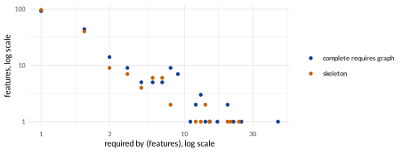
The Gini coefficient: concentration in one number
What it is. The Gini coefficient comes from
economics, where it measures how unequally income is shared in a
country: 0 when everyone earns the same, close to 1 when one person
earns everything. Here the “income” of a feature is the number of
features that require it, and the coefficient measures how unequally the
dependencies are shared among the features. Four made-up models of four
features, with the required_by of each:
vp_gini(c(3, 3, 3, 3)) # every feature required by three others
#> [1] 0
vp_gini(c(0, 2, 4, 6)) # spread unevenly
#> [1] 0.4167
vp_gini(c(0, 0, 6, 6)) # two features hold everything
#> [1] 0.5
vp_gini(c(0, 0, 0, 12)) # one feature holds everything
#> [1] 0.75Equal shares give 0; the more the dependants gather on fewer features, the closer the value gets to 1. (With features the largest possible value is , here : it reaches 1 only for very many features.) The total does not matter, only how it is shared: the four models have 12 dependants each.
Why it matters.
To see whether the model rests on a few foundations. A high Gini means that a handful of features carry most of the dependencies: changing one of them reaches much of the model, so they deserve the most careful review and the most tests, and the model is fragile where they are (see the robustness of Robustness). A low Gini means that the dependencies are spread: no feature is a single point of failure, and no short list of features to watch either.
To compare models of different sizes. Two degree distributions of models with 50 and 5,000 features cannot be laid one on the other; their Gini coefficients, which are shares, can.
To follow a model through time. A Gini that grows from version to version means that new dependencies keep landing on the same features: the model is centralising around a few hubs. One number per version is easy to plot (
vp_history_apply(), Following a model through time); a chart per version is not.For any other quantity.
vp_gini()takes any list of numbers:gini_excludesinvp_summary()measures how unevenly the conflicts are spread, and the churn of the features over a history (vp_feature_churn()) can be measured the same way.
On real models:
vp_gini(vp_feature_table(band)$required_by)
#> [1] 0.6494
vp_gini(vp_feature_table(bb)$required_by)
#> [1] 0.8496The band, 0.65: its dependants gather on the screen and its atomic
set. BusyBox, 0.85: much more concentrated; most of its features are
required by nobody, and a few, such as
CONFIG_FEATURE_SYSLOG, by dozens.
How it is computed: the Lorenz curve. The curve answers one question for every share of the features: the least required features, taken together, hold what share of all the dependants? It is easiest to build it by hand on the band. Sort its features from the least to the most required, and add up as you go:
vp_feature_table(band) |>
select(feature, required_by) |>
arrange(required_by) |>
mutate(
share_features = row_number() / n(),
share_dependants = cumsum(required_by) / sum(required_by)
)
#> # A tibble: 11 x 4
#> feature required_by share_features share_dependants
#> <chr> <int> <dbl> <dbl>
#> 1 TouchScreen 0 0.0909 0
#> 2 ContactlessPayment 0 0.182 0
#> 3 MovementFilter 0 0.273 0
#> 4 BLEv42 0 0.364 0
#> 5 BT40 0 0.455 0
#> 6 HeartRateSensor 1 0.545 0.0476
#> 7 BLEv40 1 0.636 0.0952
#> 8 NFC 1 0.727 0.143
#> 9 Screen 6 0.818 0.429
#> 10 OLED 6 0.909 0.714
#> 11 CapacityButton 6 1 1Each row is one point of the curve:
is share_features,
is share_dependants. Read three of them:
Row 5 (, ). The five least required features, almost half of the band, are required by nothing: together they hold none of the 21 dependants. The curve runs flat along the bottom.
Row 8 (, ). Add three features required by one feature each: 73 % of the features now hold 3 of the 21 dependants, 14 %.
Rows 9 to 11. The last three features, the screen and its atomic set, are required by six features each. They add the remaining 18 dependants, and the curve climbs steeply to .
The diagonal is what the curve would be if every feature
were required by as many features as every other one: then 45 % of the
features would hold 45 % of the dependants, and so on. The further the
curve sags below the diagonal, the more the dependants are concentrated
in a few features. The Gini coefficient measures the sag: it is twice
the area between the diagonal and the curve. It is 0 when the curve is
the diagonal (everyone equal), and it approaches 1 when one feature
holds all the dependants (the curve stays at 0 and jumps up at the last
feature). The formula of gini_required_by in the table of
vp_summary() above, which vp_gini() computes,
is that area counted step by step. In the figure the curve of BusyBox
stays near the bottom for longer than that of the band: the 80 % least
required features of BusyBox hold only 11 % of all its dependants.
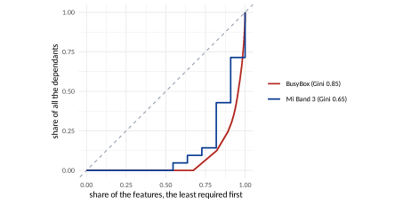
required_by. A
point
means: the least required
of the features, taken together, are required by
of all the dependants (the sum of required_by). The dashed
diagonal is perfect equality, every feature required as much as any
other; the further a curve sags below it, the more a few features hold
all the dependants. The Gini coefficient is twice the area between the
diagonal and the curve.Limits: what this cannot tell you
In the complete requires graph, a feature high in a deep hierarchy is
required by everything below it, so long tails, and a high Gini, appear
by construction. For the shape of what was written, use the skeleton:
vp_degree_distribution(bb, "skeleton"), or the Gini of
direct_required_by. The Gini says how concentrated the
dependencies are, not which features hold them, nor whether that is
good: a deliberate core library and an accidental bottleneck give the
same number. Whether a distribution is a “power law” is a statistical
question with its own test (Is it a
power law?).
References
P. Abate, J. Boender, R. Di Cosmo, S. Zacchiroli. Strong dependencies between software components. In ESEM, 2009. Extended version: arXiv:0905.4226.
A. V. Aho, M. R. Garey, J. D. Ullman. The transitive reduction of a directed graph. SIAM Journal on Computing 1(2):131–137, 1972.
N. Andersen, K. Czarnecki, S. She, A. Wąsowski. Efficient synthesis of feature models. In SPLC, pp. 106–115, 2012. doi:10.1145/2362536.2362553.
C. Baldwin, A. MacCormack, J. Rusnak. Hidden structure: Using network methods to map system architecture. Research Policy 43(8):1381–1397, 2014.
D. Benavides, S. Segura, A. Ruiz-Cortés. Automated analysis of feature models 20 years later: A literature review. Information Systems 35(6):615–636, 2010.
T. Berger, J. Guo. Towards system analysis with variability model metrics. In VaMoS, 2014.
K. Czarnecki, A. Wąsowski. Feature diagrams and logics: There and back again. In SPLC, pp. 23–34, 2007.
B. A. Davey, H. A. Priestley. Introduction to Lattices and Order, 2nd ed. Cambridge University Press, 2002.
R. Heradio, D. Fernandez-Amoros, H. Perez-Morago, A. Adan. Speeding up derivative configuration from product platforms. Entropy 16(6):3329–3356, 2014. doi:10.3390/e16063329.
T. Heß, A. Molt. Improving deterministic BDD compilation with counting-free computation of atomic sets. In SPLC, 2025. doi:10.1145/3748269.3748491.
A. MacCormack, J. Rusnak, C. Y. Baldwin. Exploring the structure of complex software designs: An empirical study of open source and proprietary code. Management Science 52(7):1015–1030, 2006.
S. Mann, G. Rock. Control variant-rich models by variability measures. In VaMoS, pp. 29–38, 2011.
M. Nieke, J. Mauro, C. Seidl, T. Thüm, I. C. Yu, F. Franzke. Anomaly analyses for feature-model evolution. In GPCE, pp. 188–201, 2018.
J. M. Sanchez, M. A. Olivero,
R. Heradio, L. Cambelo, D. Fernandez-Amoros. Reasoning About Variability
Models Through Network Analysis. Manuscript
(papers/variability); arXiv:2603.16577, 2026.
S. She, R. Lotufo, T. Berger, A. Wąsowski, K. Czarnecki. Reverse engineering feature models. In ICSE, pp. 461–470, 2011.
T. Thüm, D. Batory, C. Kästner. Reasoning about edits to feature models. In ICSE, pp. 254–264, 2009.
R. P. Dilworth. A decomposition theorem for partially ordered sets. Annals of Mathematics 51(1):161–166, 1950.
L. Mirsky. A dual of Dilworth’s decomposition theorem. American Mathematical Monthly 78(8):876–877, 1971.